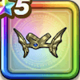

天空のかぶと
攻略班 7.0点 / メラ属性耐性+5%ギガデーモンへの耐性+5%守備減耐性+5%眠り耐性+5%究極エビルプリーストへの耐性+5%メラ属性斬撃・体技ダメージ+5%
くわしい特徴
【レベル別習得スキル】 Lv1メラ属性耐性+5% Lv5ギガデーモンへの耐性+5% Lv8守備減耐性+5% Lv10眠り耐性+5% Lv15究極エビルプリーストへの耐性+5% Lv18メラ属性斬撃・体技ダメージ+5% Lv23さいだいHP+5【戦士】 Lv25守備力+7 【限界突破スキル】 1凸けもの系への耐性+5% 2凸守備力+5 3凸すばやさ+5 4凸さいだいHP+5